Ratkaisu
Alussa voi mennä oikealle tai vasemmalle. Jos menemme oikealle, voisimme sen jälkeen mahdollisesti jatkaa ylös. Askel ylös johtaisi kuitenkin umpikujaan, koska sen jälkeen mikään mahdollinen jatko ei kulje molempiin punaisella ruksilla merkittyihin ruutuihin.
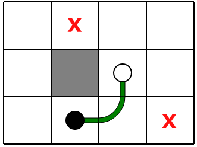Voisimme jatkaa pidemmälle oikealle ja sitten ylös, mutta tällöin päädyttäisiin taas jompaan kumpaan alla kuvattuun umpikujaan.
 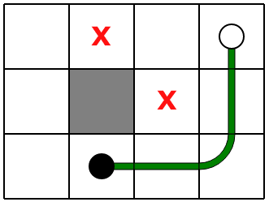
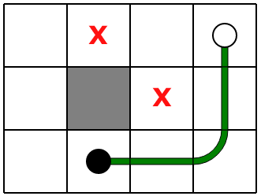
Lähdetään seuraavaksi alkuruudusta vasemmalle. Tällöin ensimmäiset 5 askelta ovat yksikäsitteisiä, ja niiden jälkeen voimme edetä alas tai oikealle.
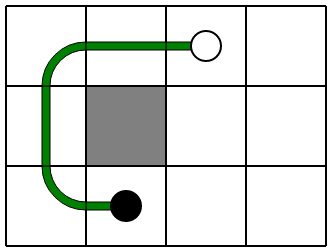Jos menemme alas, löydämme yhden mahdollisuuden kulkea kaikkiin ruutuihin.
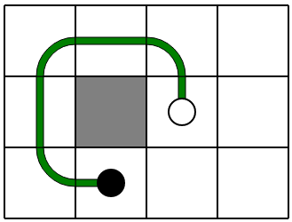Jos menemmekin oikealle, on seuraavaksi mentävä ainakin askel alas. Tämän jälkeen on kaksi mahdollista vaihtoehtoa (jatketaan alas tai käännytään vasemmalle), ja kumpikin johtaa kaikkien ruutujen läpi kulkevaan polkuun.
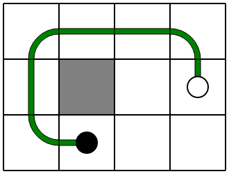Alla on nämä kolme mahdollista kaikkien valkoisten ruutujen läpi kulkevaa polkua.

Alussa voi mennä alas tai oikealle. Jos menemme alas, yksi vaihtoehto sen jälkeen olisi jatkaa oikealle, mutta tämä johtaisi kuvattuun umpikujaan, jossa mikään polun jatke ei voi käydä molemmissa punaisella ruksilla merkityissä ruuduissa.
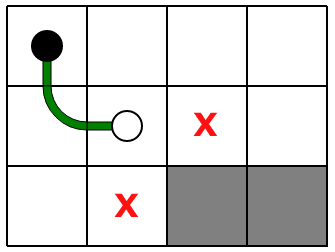Jos menemme alusta kaksi askelta alas, pitää sen jälkeen kääntyä oikean kautta takaisin ylös.
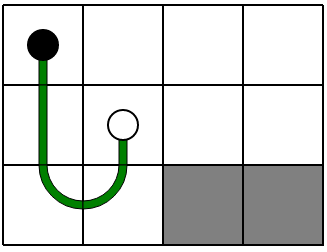Tämän jälkeen löydämme suoraviivaisesti seuraavat 3 kaikissa valkoisissa ruuduissa käyvää polkua.
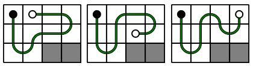Tutkitaan seuraavaksi vaihtoehtoa, jossa alussa lähdetään oikealle. Jos menemme seuraavaksi alas, päädymme umpikujaan, jossa polku ei voi jatkua molempiin ruksilla merkittyihin ruutuihin.
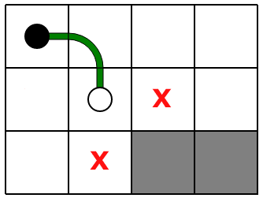Jos menemme alussa kaksi askelta oikealle ja sitten alas, päädymme jälleen umpikujaan.
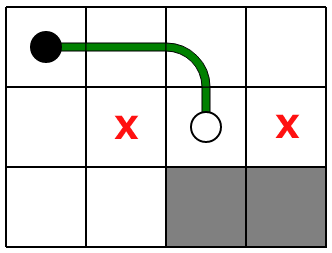Menemme siten kolme askelta oikealle, jonka jälkeen on pakko kääntyä alakautta takaisin vasemmalle.
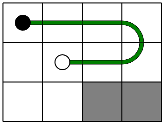Tämän jälkeen löydämme helpohkosti seuraavat 2 kaikissa valkoisissa ruuduissa käyvää polkua.
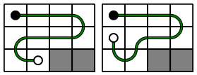Alussa voi mennä vasemmalle tai ylös. Koitetaan ensin mennä vasemmalle. Jos menemme aluksi 1, 2 tai 3 askelta vasemmalle ja sitten ylös, päädymme kuvattuihin umpikujiin, joissa mikään polun jatke ei voi käydä molemmissa punaisella ruksilla merkityissä ruuduissa.
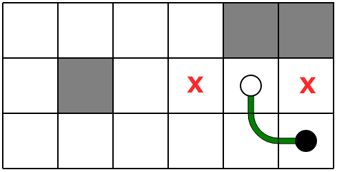 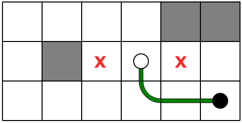 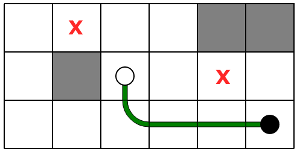Jos menemme alussa 4 askelta vasemmalle, pitää polun sen jälkeen kiertää harmaan ruduun ympäri. Kukin tämän jälkeinen mahdollinen jatko kuitenkin taas johtaa umpikujaan.
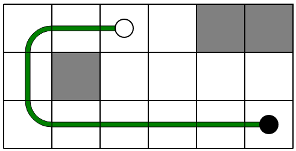 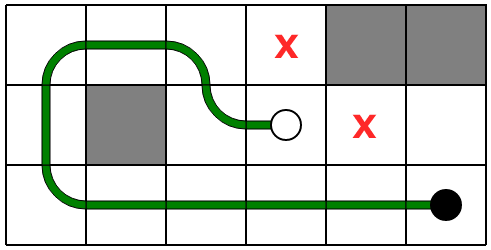 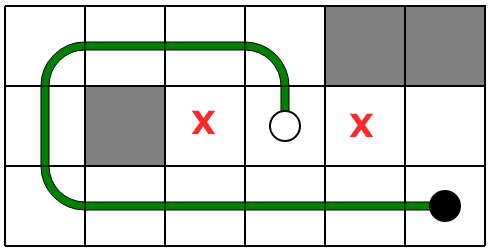Kokeillaan siis vaihtoehtoa, jossa alussa mennään ylös. Sen jälkeen on heti pakko kääntyä vasemmalle.
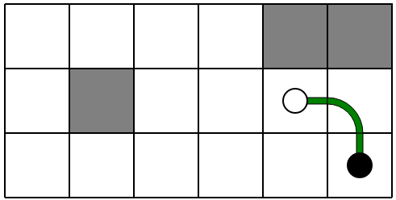Seuraavat 3 jatkovaihtoehtoa johtavat umpikujiin.
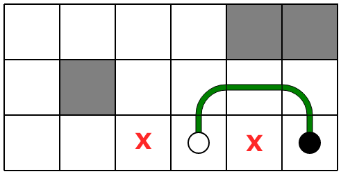 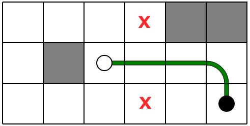 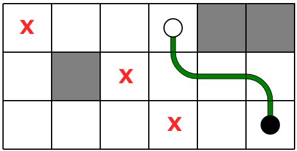Ainoa hyvältä vaikuttava aloitusmahdollisuus on seuraava.
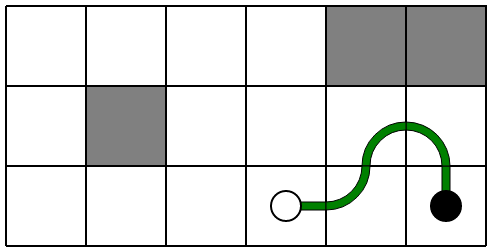Jos edeltävästä asetelmasta jatketaan ylös, löydämme 3 kaikissa valkoisissa ruuduissa käyvää polkua.
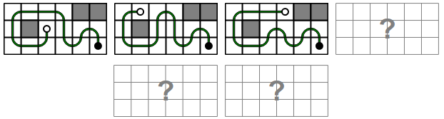Jos edeltävästä asetelmasta jatketaankin vasemmalle, löydämme 3 muuta kaikissa valkoisissa ruuduissa käyvää polkua.
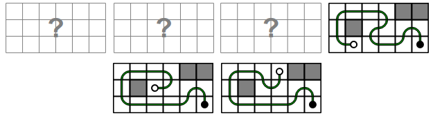Tämä on tietojenkäsittelyä!
Tehtävä havainnollistaa polkujen täydellistä hakua sekä takaisin peruuttamista, jos polku on päätynyt umpikujaan, josta ei voi jatkaa järkevään lopputulokseen.
Monissa tietojenkäsittelyn ongelmissa hyödynnetään tällaista peruuttavaa hakua. Yleinen tämäntapainen hakumenetelmä on ns. branch and bound -haku. Menetelmä toimii hyvin sellaisissa ongelmissa, joissa jo hakupolun etenemisen varhaisessa vaiheessa voidaan verrattain helposti havaita, onko kyseessä epäkelpo polku (ja on parempi peruuttaa, ohjaten sen jälkeen hakupolku jollekin vielä tutkimattomalle polulle).